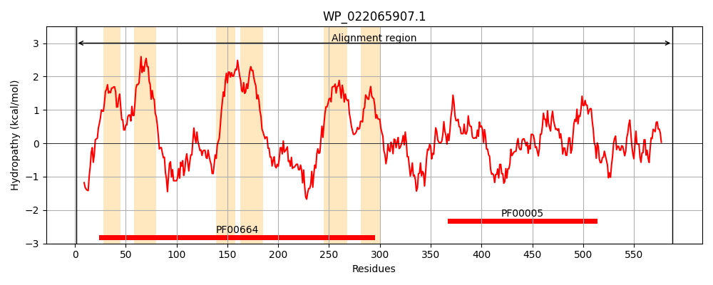
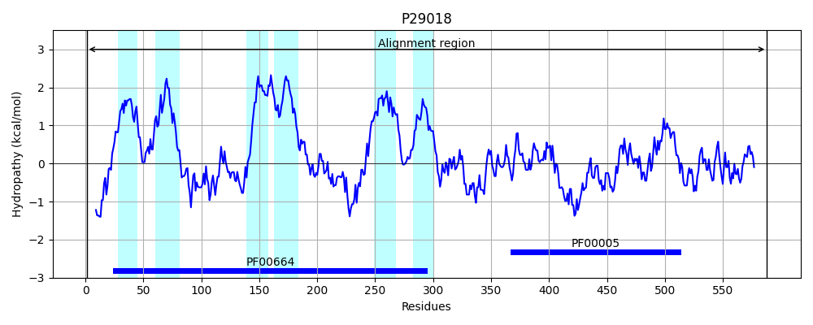
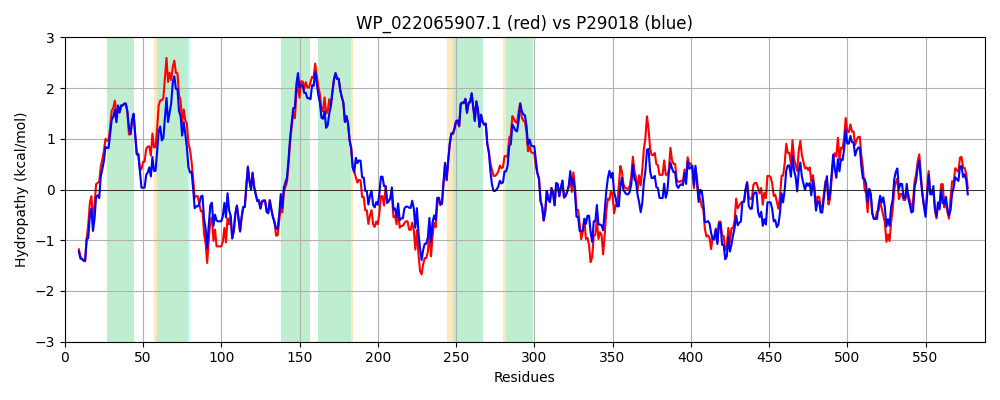

Hit Accession: P29018
Hit TCID: 3.A.1.129.1
Hit Description: gnl|BL_ORD_ID|9657 gnl|TC-DB|P29018|3.A.1.129.1 Transport ATP-binding protein cydD - Escherichia coli.
Mach Len: 588
e:0.000000
Query TMS Count : 6
Hit TMS Count: 6
TMS-Overlap Score: 5.950000
Predicted Substrates:CHEBI:5437;glutathione, CHEBI:4050;cysteine
BLAST Alignment:
Score: 2441 , Bit scores: 944 bits, E-value: 0.0e+00, Alignment length: 588, Percentage identity: 81
Query: 1 MNKTRQQELTRWLKQQSIISRRWLMISRLLGVASGLLIVAQAWFLARILHRMVMENIPATALLLPLTLLVLVFVLRAWVVWLRERVGFQAGQHIRYEIRRQVLDRLQQAGPAWIQGKPAGSWATLILEQIDDMHDYYARYLPQMTLAACVPLLIVITIFPINWAAALILLGTAPLIPLFMALVGMGAADANRRNFQALARLSGHFLDRLRGMETLRIFHRGQAEIDNIRDASQDFRQRTMEVLRLAFLSSGVLEFFTSLSIALVAVYFGFSYLGELNFGHYGAGVTLMAGFLTLILAPEFFQPLRDLGTFYHAKAQAVGAADSLKTFMETPLTQLERGEKTLNDNDLIGVEARDLVIKSPEGKVLAGPLNFSLPAGARVVLVGQSGSGKSSLLNTLLGFLPYEGSLKVNGAELRELDADRWRRLLSWVGQNPQLPAATLRENVLLAWPEASDAQLRLALDKAWVSEFIALLPDGIHTAVGDQAGRLSVGQAQRIAVARALLVPCRLLLLDEPAASLDAHSEQRVMQALTHASTEQTTLLVTHQLEGLADWDAVWVMQDGQIIEQGDYATLARAGGVFSALLAHRQEEI 588
MNK+RQ+ELTRWLKQQS+IS+RWL ISRLLG SG+LI+AQAWF+ARIL M+MENIP ALLLP TLLVL FVLRAWVVWLRERVG+ AGQHIR+ IRRQVLDRLQQAGPAWIQGKPAGSWATL+LEQIDDMHDYYARYLPQM LA VPLLIV+ IFP NWAAALILLGTAPLIPLFMALVGMGAADANRRNF ALARLSGHFLDRLRGMETLRIF RG+AEI++IR AS+DFRQRTMEVLRLAFLSSG+LEFFTSLSIALVAVYFGFSYLGEL+FGHY GVTL AGFL LILAPEFFQPLRDLGTFYHAKAQAVGAADSLKTFMETPL +RGE L D + +EA +L I SPEGK LAGPLNF+LPAG R VLVG+SGSGKSSLLN L GFL Y+GSL++NG ELR+L + WR+ LSWVGQNPQLPAATLR+NVLLA P+AS+ +L+ ALD AWVSEF+ LLP G+ T VGDQA RLSVGQAQR+AVARALL PC LLLLDEPAASLDAHSEQRVM+AL AS QTTL+VTHQLE LADWD +WVMQDG+IIEQG YA L+ AGG F+ LLAHRQEEI
Sbjct: 1 MNKSRQKELTRWLKQQSVISQRWLNISRLLGFVSGILIIAQAWFMARILQHMIMENIPREALLLPFTLLVLTFVLRAWVVWLRERVGYHAGQHIRFAIRRQVLDRLQQAGPAWIQGKPAGSWATLVLEQIDDMHDYYARYLPQMALAVSVPLLIVVAIFPSNWAAALILLGTAPLIPLFMALVGMGAADANRRNFLALARLSGHFLDRLRGMETLRIFGRGEAEIESIRSASEDFRQRTMEVLRLAFLSSGILEFFTSLSIALVAVYFGFSYLGELDFGHYDTGVTLAAGFLALILAPEFFQPLRDLGTFYHAKAQAVGAADSLKTFMETPLAHPQRGEAELASTDPVTIEAEELFITSPEGKTLAGPLNFTLPAGQRAVLVGRSGSGKSSLLNALSGFLSYQGSLRINGIELRDLSPESWRKHLSWVGQNPQLPAATLRDNVLLARPDASEQELQAALDNAWVSEFLPLLPQGVDTPVGDQAARLSVGQAQRVAVARALLNPCSLLLLDEPAASLDAHSEQRVMEALNAASLRQTTLMVTHQLEDLADWDVIWVMQDGRIIEQGRYAELSVAGGPFATLLAHRQEEI 588 | Protein Hydropathy Plots: |
|---|
|  |  |
Pairwise Alignment-Hydropathy Plot:
|
|---|
|  |